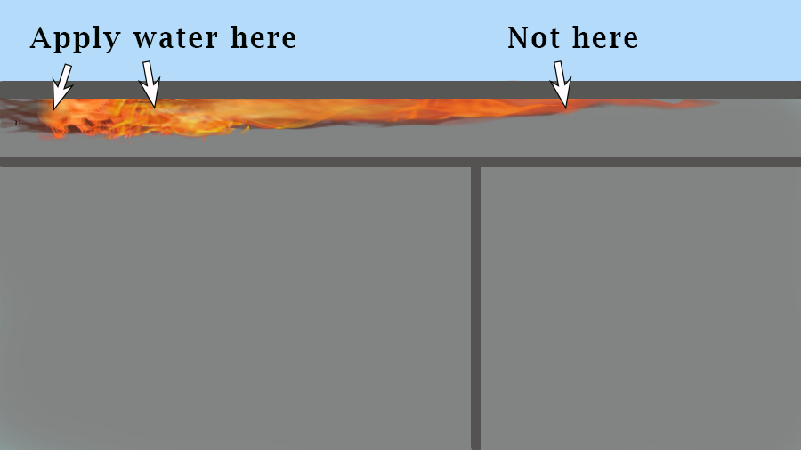

By
Bob BourgeoisBob is a former District Fire Chief (FF 40 yrs, Lynn MA), former LLC owner (public safety case studies), BS Mechanical Engineering — Columbia Univ
With input from
Joe MaloneyJoe is a former District Fire Chief (FF 32 yrs, 19 as District Chief, Lynn MA), 1st draft 10Aug2021 Latest rev 24May2025 Feedback/Qs roomfiresetc@gmail.com
Fig. 4-1 Flame Length is a clue. (Photo Pat Carritte)
Structural firefighters should know two things about flame length.
At building fires, flame length is a clue about
how much airborne fuelAirborne fuels include pyrolysis gases, partially burned fuels, vapors from liquids, and normally gaseous fuels.
(AF) is in a fire atmosphere. Simply stated, more fuel makes a flame stretch until it finds more air to burn the fuel.
It is an indicator to be used in combination with smoke, wind, building layout, and other clues. Look for patterns and changes. Ask questions. Where are the pockets of AF? Is it building up? Spreading? Can it be vented? Is the fire attack stopping the production of AF?
Fig. 4-2 Flame lengths
We usually notice the size of flames when they blow from windows and roof holes. Equally important is their stretch across ceilings and the underside of roof decks. The length of these sideways flames can be critical to the course of the incident — maybe determining how fast the fire will spread or how far it can reach to hurt someone. Less obviously, it might also affect your ability to make progress against the fire.
Remember that
stable or semi-stableSee Room Fires etc
progress against fire comes from cooling surfaces that are producing fuel gases
(pyrolysis).Heat-driven processes that produce fuel gases from solid and liquid fuels
Long horizontal flames can have a sizeable area where pyrolysis is not occuring. Water hitting that part of the visible fire won't help you make real headway.
If a crew doesn't understand, they may chase the flame pointlessly and/or misread the problem as not enough GPM.
Etc
A long horizontal flame across the underside of a combustible surface (e.g. roof deck) can have
three sections:
A pyrolysis-only section (enough heat for pyrolysis but not enough oxygen for flame). — Wetting this area will help.
A pyrolysis-and-flame section. — Wetting this area will help.
A flame-only section (not enough heat for pyrolysis yet). — Wetting this area will probably not be effective in reducing AF or putting the fire out.
The situation under a noncombustible surface will be simpler in many scenarios—one section that is flame-only. For some scenarios, though, there is another consideration. Heat is transferred to combustible materials and pyrolysis occurs without direct flame contact.
An important example is steel roof decking topped with combustible roof products. Heat conducted through the steel can pyrolyze the roof products (tar, foamed plastics etc). Wetting the steel might not help you make progress against the exposing fire but may be useful to stop the pyrolysis topside.
And don't forget that for all three section types, water can play an additional role if it travels on to wet other burning fuels.
One of the universal warnings in the fire service is “expect sudden changes”. There are many types of rapid events, but fast changes in fire conditions are some of the most deadly and most talked-about. Training, near-miss reports, and LODD reports are peppered with terms that mean either “airborne fuel burned suddenly” or “a flame extended quickly”. Don't overthink the hair-splitting jargon. It is more important to know that AF is a common factor
When using a still photo in an after-action review or training session, don't forget that some of what you see is transient. A single pic doesn't tell you if a long window flame was steady or if it was a brief flare. Was it fed by a continuous supply of AF or just a pocket of AF that vented when the window broke?
Questions
Many FFs have been taught that smoke is fuel. Can’t they just look at the amount of smoke to gauge the amount of airborne fuels?
No.
FFs should be taught that smoke is sometimes fuel and also that pyrolysis gases are sometimes transparent. There are clues in the smoke about airborne fuel, but they should be viewed with flame length and other clues.
What is included in the term “airborne fuels”?
Pyrolysis products (pyrolysates)
Partially-burned fuels
(Many fuels burn in a chain reaction. If the chain is interrupted, the halfway products become available fuel.)
Vapors from flammable or combustible liquids that may be present
(Spills or deliberate acts)
Natural gas, propane or other commercially available gases that may be present
(Leaks, relief valves, deliberate acts)
Situation awareness and decision making are not separate topics.
The bandwidth of a pair of eyes is much greater than the bandwidth of your radio channel

 progress against fire comes from cooling surfaces that are producing fuel gases
(pyrolysis).Heat-driven processes that produce fuel gases from solid and liquid fuels
Long horizontal flames can have a sizeable area where pyrolysis is not occuring. Water hitting that part of the visible fire won't help you make real headway.
progress against fire comes from cooling surfaces that are producing fuel gases
(pyrolysis).Heat-driven processes that produce fuel gases from solid and liquid fuels
Long horizontal flames can have a sizeable area where pyrolysis is not occuring. Water hitting that part of the visible fire won't help you make real headway.